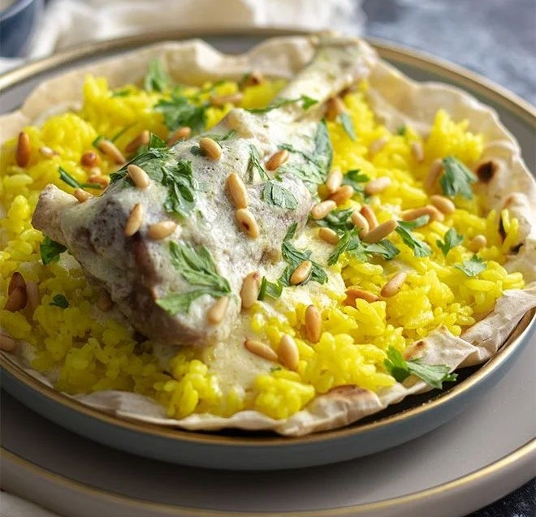

Mansaf

Ingredients:
- 1 kg lamb (cut into medium pieces)
- 2 cups jameed (dried yogurt) or 1 liter liquid jameed or laban
- 2 cups rice (washed and soaked)
- 1 large onion (quartered)
- 2 bay leaves
- 1 tsp cardamom pods
- ½ tsp turmeric (for color)
- Salt to taste
- 2 tbsp ghee or butter
- Almonds and pine nuts (roasted)
- Shrak or markook bread (optional)
Preparation👨🍳:
- Boil lamb with onion, bay leaves, and cardamom until tender. Remove scum during boiling.
- Prepare the jameed:
- If dry, soak overnight then blend with warm water until smooth.
- If liquid, just heat it up gently.
- Add cooked meat to the jameed sauce and simmer for 20 minutes.
- Cook rice with ghee and turmeric until fluffy.
- In a large dish, layer bread → rice → meat.
- Pour hot jameed sauce generously over the top.
- Garnish with toasted almonds and pine nuts. Serve hot.